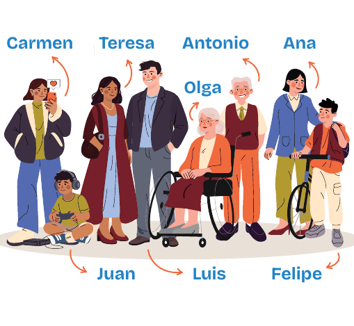

<!DOCTYPE html>
<html lang="es">
<head>
<meta charset="utf-8">
<meta name="viewport" content="width=device-width, initial-scale=1">
<title>Hablemos: cartas conversacionales</title>
<meta name="description" content="Juego de cartas conversacionales de PlatFAMs para hablar en familia sobre la vida digital.">
<meta name="theme-color" content="#16205C">
<link rel="manifest" href="manifest.webmanifest">
<link rel="icon" type="image/png" sizes="192x192" href="icons/icon-192.png">
<link rel="apple-touch-icon" href="icons/apple-touch-icon.png">
<meta name="mobile-web-app-capable" content="yes">
<meta name="apple-mobile-web-app-capable" content="yes">
<meta name="apple-mobile-web-app-title" content="Hablemos">
<style>
/* Tipografías alojadas con la app: no se pide nada a servidores de terceros. */
@font-face{font-family:"Baloo 2";font-weight:600;font-display:swap;src:url(fonts/baloo-2-latin-600-normal.woff2) format("woff2")}
@font-face{font-family:"Baloo 2";font-weight:800;font-display:swap;src:url(fonts/baloo-2-latin-800-normal.woff2) format("woff2")}
@font-face{font-family:"Atkinson Hyperlegible";font-weight:400;font-display:swap;src:url(fonts/atkinson-hyperlegible-latin-400-normal.woff2) format("woff2")}
@font-face{font-family:"Atkinson Hyperlegible";font-weight:700;font-display:swap;src:url(fonts/atkinson-hyperlegible-latin-700-normal.woff2) format("woff2")}
/* Idea de layout: un solo teléfono al centro de la mesa. Columna única, bloques grandes
   de color pleno, una acción principal por pantalla anclada abajo. Mundo visual único (sin tema claro).
   Cada área del mazo tiene su color y tiñe la partida mediante --area. */
:root{
  color-scheme: dark;
  --noche:#16205C;      /* fondo, el azul de la caja del mazo, más profundo */
  --noche-2:#22308A;    /* paneles */
  --papel:#FFFFFF;      /* carta */
  --tinta:#141A3C;      /* texto sobre carta y sobre colores */
  --naranja:#FF7A1A;
  --turquesa:#12B8A6;
  --amarillo:#FFC928;
  --rosado:#F0478C;
  --area:#EF7A23;--area-tinta:#141A3C;
  --display:"Baloo 2","Trebuchet MS",system-ui,sans-serif;
  --texto:"Atkinson Hyperlegible",Verdana,system-ui,sans-serif;
}
*{box-sizing:border-box;margin:0}
html,body{height:100%}
body{background:var(--noche);color:#fff;font-family:var(--texto);font-size:1.125rem;line-height:1.45;
  background-image:radial-gradient(circle at 12% 8%,rgba(255,122,26,.28) 0 90px,transparent 91px),
  radial-gradient(circle at 95% 30%,rgba(18,184,166,.22) 0 130px,transparent 131px),
  radial-gradient(circle at 5% 92%,rgba(240,71,140,.2) 0 110px,transparent 111px);
  background-attachment:fixed}
#app{max-width:480px;min-height:100%;margin:0 auto;padding:16px 16px 24px;display:flex;flex-direction:column;gap:16px}
h1,h2,.d{font-family:var(--display);font-weight:800;line-height:1.05;text-wrap:balance}
h1{font-size:3.4rem;letter-spacing:-.01em}
h2{font-size:1.9rem}
button{font:inherit;color:inherit;border:0;cursor:pointer}
button:focus-visible,input:focus-visible,textarea:focus-visible{outline:4px solid var(--amarillo);outline-offset:3px}
.barra{display:flex;align-items:center;gap:10px}
.puntos{background:#fff;color:var(--tinta);font-family:var(--display);font-weight:800;white-space:nowrap;
  padding:4px 10px;border-radius:999px;font-variant-numeric:tabular-nums;font-size:1.15rem}
.puntos.salta{animation:salta .5s}
.pasos{display:flex;gap:6px}
.pasos i{flex:1;height:8px;border-radius:4px;background:rgba(255,255,255,.25)}
.pasos i.ok{background:var(--area)}
.pasos i.ya{background:#fff}
.etq{display:inline-block;font-family:var(--display);font-weight:800;font-size:.95rem;text-transform:uppercase;
  letter-spacing:.06em;padding:3px 12px;border-radius:8px;background:var(--area);color:var(--area-tinta)}
.cuerpo{flex:1;display:flex;flex-direction:column;gap:16px}
.pie{display:flex;flex-direction:column;gap:10px;margin-top:auto}
.btn{display:block;width:100%;font-family:var(--display);font-weight:800;font-size:1.45rem;padding:14px 18px;
  border-radius:16px;background:var(--amarillo);color:var(--tinta);box-shadow:0 6px 0 rgba(0,0,0,.35);
  transition:transform .08s,box-shadow .08s}
.btn:active{transform:translateY(4px);box-shadow:0 2px 0 rgba(0,0,0,.35)}
.btn.sec{background:transparent;color:#fff;box-shadow:inset 0 0 0 3px rgba(255,255,255,.5);font-size:1.15rem;padding:11px}
.btn[disabled]{opacity:.4;cursor:not-allowed}
.areas{display:grid;grid-template-columns:1fr 1fr;gap:12px}
.area{position:relative;min-height:104px;border-radius:18px;padding:12px 14px;text-align:left;color:var(--tinta);
  display:flex;flex-direction:column;justify-content:space-between;gap:6px;box-shadow:0 6px 0 rgba(0,0,0,.35);transition:transform .08s}
.area:active{transform:translateY(4px)}
.area .j{font-family:var(--display);font-weight:600;font-size:.9rem;text-transform:uppercase;letter-spacing:.06em;opacity:.75}
.area .n{font-family:var(--display);font-weight:800;font-size:1.4rem;line-height:1.02}
.area .c{font-size:.9rem}
.area .hecho{position:absolute;top:10px;right:10px;width:28px;height:28px;border-radius:50%;background:#fff;color:var(--tinta);
  display:grid;place-items:center;font-size:.95rem}
.carta{background:var(--papel);color:var(--tinta);border-radius:22px;padding:22px 20px;box-shadow:0 10px 0 rgba(0,0,0,.3);
  border:12px solid var(--area);overflow:hidden;display:flex;flex-direction:column;gap:14px;animation:entra .45s cubic-bezier(.2,1.3,.4,1)}
.carta p.sit{font-size:1.22rem;line-height:1.36}
.carta img.ilu{display:block;width:calc(100% + 40px);max-width:none;margin:0 -20px}
.carta.conq img.ilu{width:70%;margin:0 auto -22px}
.fam{display:block;width:100%;border-radius:18px;background:#fff}
.preg.larga{font-size:1.25rem}
.carta .num{font-family:var(--display);font-weight:600;font-size:.95rem;opacity:.6}
.gente{display:flex;flex-wrap:wrap;gap:8px;list-style:none;padding:0}
.pers{display:flex;align-items:center;gap:8px;background:#EEF0F8;border-radius:999px;padding:4px 12px 4px 4px;font-size:.95rem}
.pers b{width:34px;height:34px;border-radius:50%;display:grid;place-items:center;color:#fff;font-family:var(--display);font-size:1.1rem}
.panel{background:var(--noche-2);border-radius:18px;padding:16px}
.chips{display:flex;flex-wrap:wrap;gap:8px}
.chip{font-family:var(--display);font-weight:600;font-size:1.1rem;min-height:44px;display:inline-flex;align-items:center;padding:6px 16px;border-radius:999px;background:#fff;color:var(--tinta)}
.chip.mas{background:transparent;color:#fff;box-shadow:inset 0 0 0 2px rgba(255,255,255,.6)}
.chip .x{margin-left:8px;opacity:.6}
.fila{display:flex;gap:8px}
input[type=text],textarea{flex:1;min-width:0;width:100%;font:inherit;padding:12px 14px;border-radius:14px;border:0;background:#fff;color:var(--tinta)}
textarea{min-height:110px;resize:vertical}
.fila .btn{width:auto;font-size:1.15rem;padding:10px 18px}
.opc{display:grid;grid-template-columns:1fr 1fr;gap:12px}
.op{min-height:128px;border-radius:18px;padding:14px;text-align:left;font-family:var(--display);font-weight:800;font-size:1.2rem;
  line-height:1.15;color:var(--tinta);display:flex;flex-direction:column;justify-content:space-between;gap:10px;
  box-shadow:0 6px 0 rgba(0,0,0,.35);transition:transform .08s}
.op:active{transform:translateY(4px)}
.op svg{width:34px;height:34px}
.c0{background:var(--naranja)}.c1{background:var(--turquesa)}.c2{background:var(--amarillo)}.c3{background:var(--rosado)}
.res{display:flex;flex-direction:column;gap:10px;list-style:none;padding:0}
.r{border-radius:14px;padding:10px 14px;color:var(--tinta);display:flex;flex-direction:column;gap:6px;transform-origin:left;animation:crece .6s both}
.r .t{font-family:var(--display);font-weight:800;font-size:1.1rem;line-height:1.15;display:flex;align-items:center;gap:8px}
.r .fm svg{width:20px;height:20px;display:block}
.r .q{display:flex;flex-wrap:wrap;gap:6px}
.r .q span{background:rgba(255,255,255,.85);border-radius:999px;padding:1px 10px;font-size:.9rem}
.r.cero{background:rgba(255,255,255,.14);color:#fff;box-shadow:inset 0 0 0 2px rgba(255,255,255,.4)}
.r.cero .fm svg path{fill:#fff}
.r.cero .q span{background:transparent;padding:0}
.premio{font-family:var(--display);font-weight:800;font-size:1.25rem;background:#fff;color:var(--tinta);border-radius:14px;padding:10px 14px}
.premio small{display:block;font-family:var(--texto);font-weight:400;font-size:.95rem}
.turno{display:block;font-family:var(--display);font-weight:800;font-size:2.6rem;line-height:1.05;color:var(--amarillo);min-height:1em;overflow-wrap:anywhere}
.preg{font-family:var(--display);font-weight:800;font-size:1.6rem;line-height:1.14;text-wrap:balance}
.reloj{height:12px;border-radius:6px;background:rgba(20,26,60,.15);overflow:hidden}
.reloj i{display:block;height:100%;background:var(--area);transform-origin:left;animation:baja 90s linear forwards}
.lista{display:flex;flex-direction:column;gap:8px;padding:0;list-style:none}
.lista li{background:#fff;color:var(--tinta);border-radius:12px;padding:10px 14px;border-left:8px solid var(--turquesa)}
.resumen{font-family:var(--texto);font-size:.95rem;line-height:1.45;white-space:pre-wrap;overflow-wrap:anywhere;background:#fff;color:var(--tinta);border-radius:12px;padding:12px;margin:10px 0;user-select:text;-webkit-user-select:text}
.grande{font-family:var(--display);font-weight:800;font-size:4.6rem;line-height:1;color:var(--amarillo);font-variant-numeric:tabular-nums}
.nota{font-size:.95rem;color:#D9DCEC}
.dialogo .nota,.carta .nota{color:#3A4066}
.centro{text-align:center}
.top{display:flex;flex-wrap:wrap;align-items:center;gap:6px}
.top .puntos{margin-left:auto}
.mini{font-family:var(--display);font-weight:800;font-size:.95rem;min-height:44px;padding:8px 10px;border-radius:12px;background:rgba(255,255,255,.16);color:#fff}
.mini.osc{background:var(--tinta);color:#fff}
.mini[aria-pressed="true"]{box-shadow:inset 0 0 0 2px var(--amarillo)}
.paso{font-size:1rem}
.fila-etq{display:flex;align-items:center;justify-content:space-between;gap:10px;flex-wrap:wrap}
.sub{font-size:1.25rem}
h3{font-family:var(--display);font-weight:800;font-size:1.15rem}
.simple{padding-left:1.2em;display:flex;flex-direction:column;gap:4px}
.guia{padding-left:1.4em;display:flex;flex-direction:column;gap:8px}
.guia li::marker{font-family:var(--display);font-weight:800}
.sr{position:absolute;width:1px;height:1px;overflow:hidden;clip-path:inset(50%);white-space:nowrap}
.velo{position:fixed;inset:0;z-index:5;background:rgba(10,14,40,.82);display:flex;align-items:flex-start;justify-content:center;padding:16px;overflow:auto}
.dialogo{background:#fff;color:var(--tinta);border-radius:20px;padding:20px;width:100%;max-width:440px;margin:auto 0;display:flex;flex-direction:column;gap:12px}
.dialogo .btn.sec{color:var(--tinta);box-shadow:inset 0 0 0 3px var(--tinta)}
.seg{display:flex;gap:8px;flex-wrap:wrap}
.seg button{flex:1;min-height:44px;padding:8px 10px;border-radius:12px;background:#E6E9F5;color:var(--tinta);font-weight:700}
.seg button[aria-pressed="true"]{background:var(--tinta);color:#fff}
h1:focus,h2:focus{outline:none}
label{display:block}
canvas#fiesta{position:fixed;inset:0;width:100%;height:100%;pointer-events:none}
@keyframes entra{from{transform:translateY(30px) rotate(-3deg) scale(.92);opacity:.2}to{transform:none;opacity:1}}
@keyframes crece{from{transform:scaleX(.1)}to{transform:none}}
@keyframes baja{to{transform:scaleX(0)}}
@keyframes salta{40%{transform:scale(1.35) rotate(-4deg)}}
@media (prefers-reduced-motion:reduce){*{animation:none!important;transition:none!important}}
@media (max-width:360px){h1{font-size:2.7rem}.op{font-size:1.05rem;min-height:116px}.preg{font-size:1.4rem}.area .n{font-size:1.2rem}}
</style>
</head>
<body>
<canvas id="fiesta" aria-hidden="true"></canvas>
<main id="app"></main>
<div id="capa"></div>
<div id="voz" class="sr" role="status" aria-live="polite"></div>
<script>
"use strict";
/* ---------- Contenido: las seis áreas del mazo en castellano ----------
   Situaciones, preguntas e ilustraciones: texto literal e imágenes del mazo "Tarjetas familiares
   conversacionales de PlatFAMs: Hablemos" (CC BY-NC-SA 4.0; diseño de Sarc Estudio Creativo).
   Los títulos y las votaciones ("titulo", "vota", "ops") son un añadido de esta app. */
const FAMILIA={Carmen:["16 años","#F0478C"],Teresa:["mamá de Carmen y Juan","#12B8A6"],Luis:["papá de Carmen y Juan","#22308A"],
  Juan:["8 años","#FF7A1A"],Felipe:["11 años","#7A4DE0"],Olga:["abuela","#C2410C"],Antonio:["abuelo","#3F6212"],Ana:["mamá de Felipe","#0E7C86"]};
const AREAS=[
{id:"com",juego:"Juego 01",nombre:"Comunicación",color:"#024EA2",tinta:"#FFFFFF",cartas:[
 {n:"6 y 7",img:"img/q06.png",titulo:"Tres móviles en el sofá",quien:["Carmen","Teresa","Luis"],
  sit:"Carmen, su madre Teresa y su padre Luis están sentados en el sofá del salón, cada uno pendiente de su móvil.\nUna amiga de Carmen acaba de descubrir que algunas de sus compañeras tienen un grupo de chat en una aplicación de mensajería instantánea (como WhatsApp) sin ella, y Carmen intenta consolarla por mensaje. Teresa está frustrada porque la han añadido a otro grupo de chat para organizar una fiesta de cumpleaños. Como no puede asistir, se pregunta si puede salir del grupo de inmediato. Luis ha recibido información sobre una próxima celebración escolar y duda con quién compartirla: solo con la familia más cercana o también con los abuelos.",
  vota:"Te suman a un grupo de chat que no te interesa. ¿Qué haces?",
  ops:["Me salgo de inmediato","Lo silencio y me quedo","Aviso y después me salgo","Me quedo por compromiso"],
  pregs:["¿Cuál es el propósito de tener grupos de conversación diferentes?", "Si te añaden a muchos chats diferentes, ¿te molesta o prefieres que te incluyan?", "¿Qué piensas de que cada uno use su móvil cuando estamos juntos? ¿Nos acerca o nos distrae?"]},
 {n:"8 y 9",img:"img/s08.png",imgq:"img/q08.png",titulo:"La videollamada de cada semana",quien:["Ana","Felipe","Antonio"],
  sit:"Ana ha pensado que podrían hacer una videollamada semanal de media hora con toda la familia. Para ello, sugiere utilizar una nueva aplicación con funciones divertidas, como fondos animados, porque cree que podría resultar más entretenida para su hijo, Felipe, que se aburre fácilmente en las llamadas largas. El abuelo Antonio pasa mucho rato intentando averiguar cómo funciona la aplicación, pero no lo consigue y se siente incómodo. No quiere pedir ayuda al resto de la familia, porque teme que no tendrán tiempo ni paciencia para explicárselo.",
  vota:"Si fueras Antonio, ¿qué harías?",
  ops:["Pido ayuda aunque me cueste","Sigo intentando solo","Propongo llamar por teléfono","Me salto la videollamada"],
  pregs:["¿Qué te parece la idea de hacer videollamadas regulares con toda la familia?", "¿Te gusta experimentar con nuevas aplicaciones?", "¿Te cuesta pedir ayuda a otras personas cuando tienes problemas con alguna nueva aplicación o dispositivo digital? ¿Por qué?", "En una situación como esta, ¿cómo crees que se puede llegar a una solución para toda la familia?"]},
 {n:"10 y 11",img:"img/s10.png",titulo:"El baile de la abuela Olga",quien:["Olga","Luis","Teresa"],
  sit:"La abuela Olga está bailando de forma divertida en la cocina. El resto de la familia, que está de visita, ríe con ella, y algunas personas graban el momento con el móvil. Más tarde, Luis comparte en sus redes sociales el vídeo que ha grabado para mostrar cuánto quiere a su familia. Cuando Teresa ve la publicación, se pregunta cómo se sentiría Olga si pudiera ver el vídeo publicado en redes sociales.",
  vota:"Antes de subir el video, Luis debería…",
  ops:["Pedirle permiso a Olga","Mandarlo solo al chat familiar","Subirlo: es un lindo recuerdo","No subirlo"],
  pregs:["¿Cómo compartes momentos importantes o especiales de tu vida con otras personas?", "¿Compartes cosas divertidas sobre tu familia en las redes sociales? ¿Cómo crees que esto puede hacer sentir a los demás miembros de la familia?", "¿Crees que es importante pensar en qué plataforma utilizar para compartir imágenes personales? ¿Por qué?", "¿Cómo te sentirías si vieras un vídeo como este, pero de otra familia que no conoces?"]},
 {n:"12 y 13",img:"img/q12.png",titulo:"Carmen ganó la liga",quien:["Carmen"],
  sit:"El equipo de baloncesto de Carmen ha ganado la liga. Está muy contenta y, aunque sabe que todo el mundo está trabajando u ocupado, quiere contárselo enseguida a la familia, así que le envía un mensaje a su padre para decirle que tiene grandes noticias.\nCarmen ve que su padre ha leído el mensaje enseguida y, a los pocos minutos, le responde con un icono de pulgar hacia arriba. También envía un mensaje a su tía, que, aunque ve que está conectada, no le responde al momento, y les escribe también a los abuelos. Su abuelo le llama inmediatamente, pero Carmen no tiene ganas de hablar en ese momento, y preferiría que simplemente le hubiera respondido al mensaje. Se siente un poco triste por no responder a la llamada.",
  vota:"Una buena noticia, ¿cómo prefieres contarla?",
  ops:["Por mensaje","Por llamada","En persona","Depende de a quién"],
  pregs:["¿Sueles mirar si la gente ha visto tus mensajes o está en línea? ¿Por qué?", "¿Cómo te gusta compartir noticias importantes? ¿Prefieres mensajes, llamadas o hacerlo en persona?", "Si estuvieras en la situación de Carmen, ¿cómo reaccionarías?"]}
]},
{id:"int",juego:"Juego 02",nombre:"Intimidad",color:"#803594",tinta:"#FFFFFF",cartas:[
 {n:"15 y 16",img:"img/q15.png",titulo:"Las notas de Carmen",quien:["Carmen","Olga","Teresa"],
  sit:"Carmen acaba de saber que ha aprobado los exámenes con excelentes. Se siente muy orgullosa, y cuelga una foto para celebrarlo en Instagram con el mensaje “¡Por fin lo he conseguido!”.\nSu abuela, Olga, que no está en las redes sociales, se entera de la noticia por un vecino que ha visto la publicación de Carmen. Más tarde, por la noche, Olga le pregunta: “¿Por qué no me lo has dicho a mí primero?” Carmen se siente un poco culpable, pero se defiende diciendo: “¡Quería compartirlo rápidamente! Todo el mundo cuelga cosas en internet”.\nLa madre de Carmen, Teresa, intenta calmarlas, pero no ve claro quién tiene razón.",
  vota:"¿Quién tiene más razón?",
  ops:["Olga","Carmen","Las dos","Ninguna: fue un malentendido"],
  pregs:["¿Cómo prefieres enterarte de noticias importantes de otros miembros de la familia?", "¿Cómo prefieres compartir tus propias noticias?", "¿Qué noticias crees que es mejor compartir en privado antes de publicarlas?", "¿Qué podríamos hacer para que todo el mundo se sintiera más incluido y tenido en cuenta en una situación similar?"]},
 {n:"17 y 18",img:"img/q17.png",titulo:"La cena interrumpida",quien:["Juan","Antonio","Luis","Teresa"],
  sit:"En la cena de la familia Fernández, todo el mundo charla en la mesa. Juan y su abuelo, Antonio, ríen mientras juegan con el asistente virtual (p. ej., Alexa) a un juego de preguntas y respuestas. El padre, Luis, está a su lado e intenta explicar a todo el mundo una historia divertida del trabajo. Mientras tanto, la madre, Teresa, mira repetidamente el móvil porque no le paran de llegar mensajes del trabajo. Intenta estar al caso, pero los demás siguen la conversación sin ella.\nLuis se detiene a media historia porque ve que los demás no le hacen caso. Teresa está agobiada, intentando prestar atención a la familia, pero al mismo tiempo respondiendo a los mensajes de trabajo. Juan y su abuelo Antonio paran el juego, un poco decepcionados.",
  vota:"En nuestras comidas, la tecnología debería estar…",
  ops:["Fuera de la mesa","Solo para urgencias","Permitida si la usamos juntos","Sin reglas"],
  pregs:["¿Qué hace que te sientas incluido/a durante el tiempo que compartes con la familia (las comidas, conversaciones familiares...)?", "¿Te parece que hay mensajes que requieren una respuesta inmediata?", "¿Qué tipos de interrupciones debidas a las tecnologías (mensajes, llamadas, mirar las redes...) te parecen bien, y cuáles no?", "¿Te gustaría que la familia pusiera normas de comportamiento con la tecnología en las comidas? ¿Por qué? ¿Cuáles podrían ser?"]},
 {n:"19 y 20",img:"img/s19.png",titulo:"La reunión por videollamada",quien:["Juan","Antonio","Luis"],
  sit:"Juan va a la reunión de familias y profesorado con el abuelo, Antonio, mientras que su padre, Luis participa por videollamada desde el trabajo. La conexión se corta constantemente, y Luis se pierde partes de la conversación.\nJuan está contento de que su padre haya hecho el esfuerzo de conectarse y estar allí, pero al mismo tiempo le gustaría que estuviese presencialmente en la reunión, como hacen otras familias.",
  vota:"Participar por videollamada en un momento importante es…",
  ops:["Estar presente","Mejor que nada","No es lo mismo","Depende del momento"],
  pregs:["¿Qué crees que significa “estar presente” en momentos importantes?", "¿Te parece que participar en una conversación por videollamada puede ser adecuado en algunos casos? ¿En cuáles crees que lo es y en cuáles no?", "Si alguien solo puede participar por videollamada, ¿qué podría ayudar a que se sienta más parte de la conversación?", "En eventos escolares o familiares importantes, ¿cómo te gustaría que participara tu familia?"]},
 {n:"21 y 22",img:"img/q21.png",titulo:"Después de la discusión",quien:["Carmen","Teresa","Olga"],
  sit:"Después de una discusión sobre las tareas domésticas, Carmen, de 16 años, se va a su habitación y se tumba en la cama a mirar vídeos en el móvil en lugar de hacer lo que le han pedido. Su madre, Teresa, se siente frustrada. Quiere que haga las cosas de casa, pero también piensa que quizás si la presiona ahora mismo empeorará las cosas.\nSe queda parada en el umbral de la puerta, sin saber si darle un poco de espacio o insistir en que se ponga a trabajar. La abuela, Olga, que ha oído la discusión desde la sala de estar, se pregunta en silencio si refugiarse en el móvil ayuda a la gente a relajarse o si impide hablar de lo que realmente les preocupa. Se pregunta si debería enviarle un mensaje para asegurarse de que está bien.",
  vota:"Después de una discusión, ¿qué necesitas tú?",
  ops:["Espacio","Hablar con alguien","Distraerme un rato","Que me vengan a buscar"],
  pregs:["¿Qué necesitas después de una discusión? ¿Qué te den espacio, hablar con alguien, distraerte, o alguna otra cosa? ¿Por qué?", "Cuando te sientes mal, ¿crees que utilizar la tecnología te ayuda a sentirte mejor? ¿Por qué?", "¿Cómo puedes hacer saber a los demás que necesitas tiempo para estar solo/a?", "¿Cómo te gustaría que alguien se pusiera en contacto contigo después de una discusión?"]}
]},
{id:"vig",juego:"Juego 03",nombre:"Vigilancia",color:"#EF7A23",tinta:"#141A3C",cartas:[
 {n:"24 y 25",img:"img/s24.png",titulo:"La fiesta de Carmen",quien:["Carmen","Teresa"],
  sit:"Carmen tiene 16 años y ha ido a una fiesta. Aceptó volver a casa a las 11 de la noche, ya es más tarde y todavía no ha vuelto. Teresa, su madre, está preocupada y está considerando utilizar una aplicación para rastrear la ubicación de Carmen.",
  vota:"Si fueras Teresa, ¿qué harías?",
  ops:["Instalo la aplicación sin decirle","Le pregunto a Carmen antes","La llamo y espero","Confío en ella y no hago nada"],
  pregs:["¿Cómo crees que se sentiría Carmen si su madre, Teresa, decidiera rastrear su ubicación sin su consentimiento?", "¿Has hablado alguna vez con familiares o amigos de la posibilidad de utilizar aplicaciones de geolocalización para saber dónde están en cualquier momento?", "Si sabes dónde están los demás en todo momento, ¿quiere decir esto que los propietarios de la plataforma también lo saben? Si es así, ¿cómo te hace sentir esto?", "Como familia, ¿querrías tener un acuerdo sobre cómo utilizar estas aplicaciones?"]},
 {n:"26 y 27",img:"img/s26.png",imgq:"img/q26.png",titulo:"Felipe sale con sus amigos",quien:["Felipe","Olga"],
  sit:"Felipe tiene 11 años. Cuando sale a pasear con amigos por el barrio, mientras está de visita en casa de su abuela Olga, ella quiere rastrearlo a través de una aplicación en su teléfono. Felipe no quiere que su abuela lo siga.",
  vota:"¿Con quién estás más de acuerdo?",
  ops:["Con Olga","Con Felipe","Un poco con cada uno","Depende de adónde vaya"],
  pregs:["¿Por qué crees que la abuela de Felipe quiere seguirlo?", "¿Por qué crees que Felipe no quiere ser rastreado?", "¿Cómo crees que se siente Felipe cuando lo siguen/rastrean?"]},
 {n:"28 y 29",img:"img/s28.png",titulo:"La cuenta que pide la escuela",quien:["Luis","Juan"],
  sit:"Luis hace todo lo posible para evitar utilizar los servicios de una gran empresa multinacional tecnológica, pero la escuela ha exigido a su hijo de 8 años, Juan, que se cree una cuenta en una plataforma digital de una de estas empresas para poder acceder a la aplicación educativa que utiliza el centro.",
  vota:"Si fueras Luis, ¿qué harías?",
  ops:["Creo la cuenta y listo","Hablo primero con la escuela","Pido otra alternativa","Me junto con otras familias"],
  pregs:["¿Por qué crees que Luis no quiere utilizar los servicios de una gran empresa multinacional tecnológica (p. ej., Google)?", "¿Crees que las escuelas deben poder exigir a los menores que se abran cuentas para hacer uso de los servicios de empresas multinacionales (p. ej., Google Classroom)?", "¿Qué crees que pueden hacer las familias? ¿Y los centros educativos?"]},
 {n:"30 y 31",img:"img/s30.png",imgq:"img/q30.png",titulo:"La alerta de la plaza",quien:["Luis","Juan"],
  sit:"Luis ha configurado una zona de seguridad en una aplicación de geolocalización vinculada al dispositivo que lleva su hijo Juan, de manera que recibe una alerta en el teléfono si el niño sale del parque infantil que tienen cerca de casa.\nLuis piensa que esto es muy práctico, porque así puede dedicar el tiempo a hacer cosas en casa mientras Juan juega en el parque. Cree que utilizando la aplicación Juan está más seguro.",
  vota:"Para ti, la alerta de zona segura es…",
  ops:["Cuidado","Control","Las dos cosas","Depende de si Juan lo sabe"],
  pregs:["¿Cómo crees que afecta a la relación entre Luis y Juan el uso de la plataforma de geolocalización?", "¿Qué harías tú en esta situación?"]},
 {n:"32 y 33",img:"img/s32.png",imgq:"img/q32.png",titulo:"¿Dónde está la abuela Olga?",quien:["Olga","Luis","Ana"],
  sit:"La abuela, Olga, tiene Alzheimer, y sus dos hijos, Luis y Ana, consideran necesario poder saber dónde está en todo momento. Sin embargo, Luis se muestra reticente a utilizar una aplicación de geolocalización (p. ej., Google Maps).",
  vota:"¿Quién debería decidir?",
  ops:["Olga","Luis y Ana","Toda la familia junta","Quien la cuida a diario"],
  pregs:["¿Por qué crees que Luis no quiere utilizar geolocalización?", "¿Quién consideras que debería tomar la decisión en esta situación?"]}
]},
{id:"str",juego:"Juego 04",nombre:"Streaming y juegos",color:"#F1C85E",tinta:"#141A3C",cartas:[
 {n:"35 y 36",img:"img/s35.png",imgq:"img/q35.png",titulo:"¿Película, video o conversación?",quien:["Antonio","Juan","Luis"],
  sit:"Por la tarde, el abuelo, Antonio, cuida a su nieto pequeño, Juan. Cuando el padre de Juan, Luis, vuelve a casa del trabajo, Antonio sugiere que los tres miren una película de cuando era joven, que hace poco que ha conseguido encontrar en el catálogo de una plataforma de streaming. Juan preferiría que vieran juntos el último vídeo de su creador de contenidos preferido (p. ej., Youtuber), pero Luis dice que al tener tan pocas oportunidades de pasar un atardecer juntos, sería mejor poder charlar un rato.",
  vota:"¿Qué elegirías tú para esa tarde?",
  ops:["La película antigua","El video del creador favorito","Conversar","Un poco de cada cosa"],
  pregs:["¿Por qué crees que Luis prefiere charlar en vez de ver algo juntos? ¿Por qué crees que el abuelo quiere ver una película antigua? ¿Y por qué crees que el nieto quiere ver a su creador de contenidos preferido con su padre y su abuelo?", "¿Cómo podrían llegar a un acuerdo sobre cómo pasar tiempo juntos?", "¿Qué es lo más importante para tu familia cuando pasáis tiempo juntos?"]},
 {n:"37 y 38",img:"img/s37.png",titulo:"Consola o juego de mesa",quien:["Felipe","Ana"],
  sit:"La familia decide dedicar tiempo a jugar juntos un miércoles después de la escuela. Felipe sugiere que jueguen a un videojuego multijugador en la consola del comedor (p. ej., la Switch). Su madre, Ana, cree que sería mejor jugar a un juego de mesa porque cree que es una mejor opción para compartir tiempo en familia.",
  vota:"Para jugar en familia, ¿qué prefieres?",
  ops:["Videojuego","Juego de mesa","Los dos, por turnos","Que elija quien no eligió la última vez"],
  pregs:["Los juegos pueden ser tanto digitales como analógicos. ¿Crees que uno es mejor que el otro cuando se trata de pasar tiempo juntos en familia? ¿Por qué?", "Como familia, ¿en qué momentos escogerías jugar a juegos analógicos y en cuáles a juegos digitales?"]},
 {n:"39 y 40",img:"img/s39.png",titulo:"La cuenta de videos de Ana",quien:["Felipe","Ana"],
  sit:"Hace unos años, cuando Felipe quería ver vídeos en internet (p. ej., en YouTube) sobre su videojuego preferido, su madre, Ana, le permitió empezar a utilizar su cuenta en la plataforma.\nAhora, sin embargo, esto empieza a ser una molestia, porque la plataforma, en lugar de sugerirle vídeos de sus canales de yoga preferidos, le recomienda vídeos similares a los que ve su hijo. Por eso se plantea si su hijo de 11 años debería tener su propia cuenta.",
  vota:"El acceso de niños, niñas y adolescentes a las plataformas de video debería estar…",
  ops:["Prohibido","Regulado","Permitido","Depende de la edad"],
  pregs:["¿Qué opción crees que es más segura? ¿Cuál es más cómoda? ¿Por qué?", "¿Cuáles consideras que son las ventajas y desventajas de que la madre pueda enterarse de los contenidos que ve su hijo?", "¿Cuáles piensas que son las ventajas y desventajas de permitir que el hijo se abra su propia cuenta?", "¿Cómo se debería gestionar el acceso de los niños, niñas y adolescentes a las plataformas digitales, como las de vídeo? ¿Debería estar prohibido, regulado o permitido?"]},
 {n:"41 y 42",img:"img/s41.png",imgq:"img/q41.png",titulo:"La música del coche",quien:["Luis","Teresa","Carmen","Juan"],
  sit:"Luis, Teresa, Carmen y Juan han salido de vacaciones con el coche. Carmen conecta su cuenta de música en línea (p. ej., Spotify) a los altavoces del coche y pone música rap. A su madre también le gusta, pero Luis (que es el que conduce) y Juan no la soportan.\nAmbas sugieren que padre e hijo se pongan auriculares para escuchar su música o pódcasts preferidos.",
  vota:"¿Quién debería elegir la música del coche?",
  ops:["Quien conduce","Una canción cada uno","Votamos entre todos","Cada uno con sus auriculares"],
  pregs:["¿Crees que es una buena solución? ¿Qué ventajas y desventajas ves?", "¿Qué otra solución crees que hay en esta situación? ¿Cómo podrían llegar a un acuerdo?", "¿Quién crees que debería decidir qué se escucha en el coche, y cómo?"]}
]},
{id:"sal",juego:"Juego 05",nombre:"Salud",color:"#D66128",tinta:"#141A3C",cartas:[
 {n:"44 y 45",img:"img/q44.png",titulo:"La cuenta de salud de Carmen",quien:["Carmen","Teresa"],
  sit:"Carmen ha cumplido 16 años y, a partir de ahora, la plataforma de salud (p. ej., La Meva Salut de Cataluña) le ha asignado el control sobre su cuenta. Esto quiere decir que sus padres ya no pueden acceder a sus datos de salud.\nCarmen quería que sus padres continuaran teniendo acceso y poder pedirle citas al médico.\nSin embargo, su madre, Teresa, cree que su hija debería hacerlo ella misma ahora que la plataforma ha establecido que sea responsable.",
  vota:"¿Quién debería pedir las citas médicas de Carmen?",
  ops:["Carmen sola","Sus padres, como antes","Carmen, con ayuda al principio","Lo que decida Carmen"],
  pregs:["Los deseos de los miembros de la familia y lo que las plataformas sugieren no necesariamente coinciden. ¿Cómo crees que la familia puede gestionarlo?"]},
 {n:"46 y 47",img:"img/s46.png",titulo:"Seguirse en la aplicación de ejercicio",quien:["Antonio","Luis","Carmen"],
  sit:"El abuelo, Antonio, el padre, Luis, y la hija, Carmen, utilizan una plataforma de fitness que les permite compartir actividades.\nLuis y Carmen se siguen mutuamente y pueden ver datos como la distancia o la velocidad media de sus rutas. Hijo y nieta quieren seguir al abuelo Antonio, y que él los siga también, pero Antonio prefiere quedar al margen.",
  vota:"¿Te gustaría que tu familia viera tus datos de ejercicio?",
  ops:["Sí, me motiva","Solo algunos datos","No, son míos","Solo si yo veo los suyos"],
  pregs:["¿Cuáles crees que pueden ser las ventajas y desventajas de seguirse mutuamente en las plataformas de fitness?", "¿Por qué crees que Antonio no quiere seguir ni ser seguido por su hijo y su nieta?"]},
 {n:"48 y 49",img:"img/s48.png",imgq:"img/q48.png",titulo:"El chat para cuidar a Olga",quien:["Olga"],
  sit:"Cuando Olga comenzó a mostrar síntomas de Alzheimer, la familia quiso crear un grupo de chat para coordinarse mejor, y poder compartir responsabilidades.\nLa familia, sin embargo, no se pone de acuerdo en qué plataforma deberían utilizar.",
  vota:"¿Dónde compartirías información de salud de la familia?",
  ops:["En el chat de siempre","En una aplicación más privada","Por teléfono o en persona","En un cuaderno en casa"],
  pregs:["¿Qué plataforma piensas que podría ser una buena opción para compartir información relacionada con la salud, y qué plataformas habría que evitar? ¿Por qué?"]}
]},
{id:"apr",juego:"Juego 06",nombre:"Aprendizaje",color:"#EF464A",tinta:"#141A3C",cartas:[
 {n:"51 y 52",img:"img/s51.png",imgq:"img/q51.png",titulo:"Olga llama otra vez a Ana",quien:["Olga","Ana"],
  sit:"A la madre de Ana, Olga, no le gusta que la tecnología se haya convertido en una parte tan importante de su día a día, porque la hace sentir insegura y le cuesta adaptarse a ella.\nOlga a menudo llama a Ana para que le ayude a hacer cosas como entrar en la cuenta del banco, configurar el teléfono o pedir una cita al médico. Ana, sin embargo, está muy ocupada; está divorciada, tiene un hijo en custodia compartida y tiene un trabajo a tiempo completo. A veces, se siente desbordada y se enfada cuando su madre a menudo le pide ayuda.",
  vota:"¿Quién debería ayudar a Olga con la tecnología?",
  ops:["Ana, es su hija","Toda la familia, por turnos","Otra persona de confianza","Un taller o servicio del barrio"],
  pregs:["¿Cómo crees que se siente Olga cuando llama a Ana?", "¿Por qué crees que a Olga no le gusta que tantas cosas se hayan digitalizado?", "¿Por qué crees que Ana a veces se enfada cuando Olga le llama para pedirle ayuda?", "¿Quién crees que debería ayudar a Olga a usar la tecnología que necesita para su día a día?"]},
 {n:"53 y 54",img:"img/s53.png",imgq:"img/q53.png",titulo:"El primer móvil de Felipe",quien:["Felipe"],
  sit:"Hasta ahora, Felipe había utilizado la tableta familiar con una cuenta que sus padres podían supervisar. Ahora, que ha cumplido 11 años, pide su propio teléfono móvil y crear su cuenta personal para acceder a vídeos (p. ej., YouTube) y poder ver contenido sin que sus padres vean qué mira.",
  vota:"¿Qué opinas de lo que pide Felipe?",
  ops:["Sí al móvil y a la cuenta","Móvil sí, con cuenta supervisada","Todavía no","Que lo conversen y pongan reglas"],
  pregs:["¿Qué piensas de la propuesta de Felipe?", "¿Qué crees que se puede hacer para que Felipe tenga privacidad cuando navegue por internet, pero que su familia le pueda apoyar?"]},
 {n:"55 y 56",img:"img/s55.png",titulo:"La tarea de reciclaje",quien:["Felipe"],
  sit:"Felipe está haciendo los deberes en casa. Estudia el reciclaje y la conservación de la fauna salvaje. Su maestra utiliza una aplicación para facilitar la comunicación entre la escuela y la familia. Ha pedido a las familias que identifiquen las prácticas de reciclaje que hacen en casa durante una semana.",
  vota:"Las aplicaciones para comunicarse con la escuela…",
  ops:["Ayudan mucho","Ayudan, pero son demasiadas","Prefiero hablar en persona","Depende de qué datos piden"],
  pregs:["¿Qué piensas de las prácticas digitales que suponen una colaboración entre la escuela y la familia?", "¿Cómo crees que las familias pueden apoyar la escuela?", "¿Utilizas plataformas digitales para comunicarte con la escuela? ¿Qué piensas? ¿Cuáles consideras que son los principales puntos fuertes y las posibles limitaciones de estas plataformas según tu experiencia?"]},
 {n:"57 y 58",img:"img/s57.png",imgq:"img/q57.png",titulo:"Inglés en la tableta",quien:["Luis","Carmen"],
  sit:"La familia Fernández ha comprado recientemente una tableta de uso común. El padre, Luis, ha descubierto una plataforma de aprendizaje de idiomas (p. ej., Duolingo). Están muy interesados en aprender inglés, y han decidido utilizarla con su hija Carmen. Se lo pasan muy bien aprendiendo juntos, aunque Carmen hubiera preferido utilizar otra aplicación con otro tipo de actividades.",
  vota:"¿Quién debería elegir las aplicaciones para aprender?",
  ops:["Los adultos","Quien la va a usar","Toda la familia","La escuela"],
  pregs:["¿Qué piensas de acceder a plataformas digitales para aprender algo, como los idiomas?", "¿Qué piensas de las empresas que hay detrás de estas plataformas?", "¿Qué piensas de que sean sólo los padres quienes tomen estas decisiones?", "¿Habría que hablar previamente de cuáles son las plataformas que queremos usar conjuntamente y de su uso?"]}
]}
];
const FORMAS=[
 '<svg viewBox="0 0 40 40"><path fill="#141A3C" d="M20 2l5.3 11.4 12.3 1.5-9.1 8.5 2.4 12.2L20 29.5 9.1 35.6l2.4-12.2-9.1-8.5 12.3-1.5z"/></svg>',
 '<svg viewBox="0 0 40 40"><path fill="#141A3C" d="M28 3a17 17 0 1 0 9 26A14 14 0 0 1 28 3z"/></svg>',
 '<svg viewBox="0 0 40 40"><path fill="#141A3C" d="M20 2c8 10 13 16 13 23a13 13 0 0 1-26 0C7 18 12 12 20 2z"/></svg>',
 '<svg viewBox="0 0 40 40"><path fill="#141A3C" d="M20 2l15.6 9v18L20 38 4.4 29V11z"/></svg>'];
const SUGERIDOS=["Mamá","Papá","Abuela","Abuelo"];
const K_AC="hablemos-acuerdos",K_AR="hablemos-areas",K_AJ="hablemos-ajustes";
const PASOS=["Leer","Votar","Conversar","Acordar"];
/* Enlace al cuestionario voluntario (Microsoft Forms). Mientras esté vacío, la app no muestra el botón. */
const FORMS_URL="";
const PASO_DE={situacion:1,pase:2,voto:2,resultado:2,pregunta:3,acuerdo:4};

/* ---------- Estado ---------- */
let S={pantalla:"inicio",jug:[],modo:"",orden:[],i:0,votos:[],q:0,empieza:"",prem:{},pts:0,acuerdos:[],medallas:[],reg:[],tipoAc:"no"};
let tick=null,velo="",hablando=false;
let A={letra:0,tiempo:false,sonido:true,musica:true};
try{Object.assign(A,JSON.parse(localStorage.getItem(K_AJ)||"{}"))}catch(e){}
const app=document.getElementById("app"),capa=document.getElementById("capa"),voz=document.getElementById("voz");
const puedeHablar="speechSynthesis" in window&&"SpeechSynthesisUtterance" in window;
const esc=s=>String(s).replace(/[&<>"']/g,c=>({"&":"&amp;","<":"&lt;",">":"&gt;",'"':"&quot;","'":"&#39;"}[c]));
function lee(k){try{return JSON.parse(localStorage.getItem(k)||"[]")}catch(e){return []}}
function suma_a(k,v){try{const a=lee(k);if(!a.includes(v)){a.push(v);localStorage.setItem(k,JSON.stringify(a))}}catch(e){}}
function ajusta(){document.documentElement.style.fontSize=[100,115,130][A.letra]+"%";try{localStorage.setItem(K_AJ,JSON.stringify(A))}catch(e){}}
/* ---------- Sonidos: tonos breves sintetizados, uno distinto por acción ---------- */
let ctx=null;
const SONES={
 toque:[[520,0,.07,"triangle"]],
 atras:[[440,0,.07,"triangle"],[330,.07,.09,"triangle"]],
 area:[[392,0,.09,"triangle"],[523,.08,.09,"triangle"],[659,.16,.14,"triangle"]],
 carta:[[880,0,.05,"sine"],[660,.05,.05,"sine"],[990,.1,.1,"sine"]],
 suma:[[660,0,.06,"sine"],[880,.06,.09,"sine"]],
 quita:[[500,0,.06,"sine"],[350,.06,.1,"sine"]],
 voto0:[[523,0,.16,"square"]],voto1:[[587,0,.16,"square"]],voto2:[[659,0,.16,"square"]],voto3:[[784,0,.16,"square"]],
 salta:[[300,0,.12,"sine"]],
 resultado:[[523,0,.25,"triangle"],[659,0,.25,"triangle"],[784,0,.3,"triangle"]],
 tic:[[1200,0,.025,"square"]],
 turno:[[784,0,.08,"triangle"],[1047,.08,.16,"triangle"]],
 punto:[[988,0,.07,"square"],[1319,.07,.16,"square"]],
 acuerdo:[[523,0,.1,"triangle"],[659,.1,.1,"triangle"],[784,.2,.1,"triangle"],[1047,.3,.25,"triangle"]],
 aviso:[[220,0,.12,"sawtooth"],[196,.14,.16,"sawtooth"]],
 final:[[523,0,.12,"square"],[523,.14,.12,"square"],[523,.28,.12,"square"],[659,.42,.2,"square"],[587,.64,.12,"square"],[784,.78,.4,"square"]]
};
function audio(){
  if(!ctx){const C=window.AudioContext||window.webkitAudioContext;if(!C)return false;ctx=new C()}
  if(ctx.state==="suspended")ctx.resume();
  return true;
}
function suena(n){
  if(!A.sonido||!SONES[n])return;
  try{
    if(!audio())return;
    const t=ctx.currentTime+.01;
    SONES[n].forEach(([f,t0,d,tipo])=>{const o=ctx.createOscillator(),g=ctx.createGain(),v=tipo==="square"||tipo==="sawtooth"?.05:.12;
      o.type=tipo;o.frequency.value=f;g.gain.setValueAtTime(0,t+t0);g.gain.linearRampToValueAtTime(v,t+t0+.01);g.gain.exponentialRampToValueAtTime(.0001,t+t0+d);
      o.connect(g);g.connect(ctx.destination);o.start(t+t0);o.stop(t+t0+d+.02)});
  }catch(e){}
}
const SON_DE={area:"area",sorpresa:"area",ayuda:"toque",cierra:"toque",aj:"toque",inicio:"toque",otra:"atras",atras:"atras",quita:"quita",partir:"carta",avotar:"toque",
  saltavoto:"salta",veo:"toque",novota:"salta",apregs:"carta",otrapersona:"toque",hablado:"punto",salta:"salta",depalabra:"acuerdo",sinacuerdo:"salta",copia:"toque",musica:"toque"};
/* ---------- Música: una melodía original en bucle para el inicio y otra por área, generadas en el teléfono ---------- */
const HZ=n=>440*Math.pow(2,(n-69)/12);
const PISTAS={
 inicio:{bpm:100,onda:"triangle",ac:[[60,64,67],[55,59,62],[57,60,64],[53,57,60]],pat:[0,1,2,3,2,1,2,-1]},
 com:{bpm:116,onda:"sine",ac:[[67,71,74],[60,64,67],[62,66,69],[67,71,74]],pat:[0,-1,2,2,-1,1,3,-1]},
 int:{bpm:76,onda:"sine",ac:[[53,57,60],[50,53,57],[58,62,65],[60,64,67]],pat:[0,-1,1,-1,2,-1,1,-1]},
 vig:{bpm:96,onda:"triangle",ac:[[57,60,64],[53,57,60],[60,64,67],[55,59,62]],pat:[0,0,2,-1,1,-1,2,3]},
 str:{bpm:134,onda:"square",ac:[[62,66,69],[67,71,74],[62,66,69],[57,61,64]],pat:[0,2,3,2,0,2,3,1]},
 sal:{bpm:84,onda:"sine",ac:[[62,66,69],[66,69,73],[67,71,74],[57,61,64]],pat:[2,-1,1,-1,0,-1,1,2]},
 apr:{bpm:104,onda:"triangle",ac:[[58,62,65],[60,63,67],[53,57,60],[58,62,65]],pat:[0,1,-1,2,3,-1,2,1]}
};
let gesto=false;const mus={g:null,pista:null,paso:0,t:0,reloj:null};
function nota(f,t,d,onda,v){const o=ctx.createOscillator(),g=ctx.createGain();o.type=onda;o.frequency.value=f;
  g.gain.setValueAtTime(0,t);g.gain.linearRampToValueAtTime(v,t+.02);g.gain.exponentialRampToValueAtTime(.0001,t+d);
  o.connect(g);g.connect(mus.g);o.start(t);o.stop(t+d+.03)}
function compas(){
  if(!ctx||!mus.pista||ctx.state!=="running")return;
  const P=PISTAS[mus.pista],c=30/P.bpm;
  if(mus.t<ctx.currentTime)mus.t=ctx.currentTime+.05;
  while(mus.t<ctx.currentTime+.35){
    const s=mus.paso%64,e=s%8,ch=P.ac[Math.floor(s/8)%4],pat=s<32?P.pat:P.pat.slice().reverse(),i=pat[e];
    if(e===0)ch.forEach(n=>nota(HZ(n),mus.t,c*8,"sine",.02));
    if(e===0||e===4)nota(HZ(ch[0]-12),mus.t,c*3,"triangle",.06);
    if(i>=0)nota(HZ([ch[0],ch[1],ch[2],ch[0]+12][i]+12),mus.t,c*1.6,P.onda,P.onda==="square"?.022:.05);
    mus.paso++;mus.t+=c}
}
function musica(){
  const quiero=A.musica&&gesto?(S.orden.length&&S.pantalla!=="inicio"?area().id:"inicio"):null;
  try{
    if(!quiero){if(mus.g)mus.g.gain.setTargetAtTime(0,ctx.currentTime,.05);mus.pista=null;clearInterval(mus.reloj);mus.reloj=null;return}
    if(!audio())return;
    if(!mus.g){mus.g=ctx.createGain();mus.g.gain.value=0;mus.g.connect(ctx.destination)}
    let espera=0;
    if(mus.pista!==quiero){mus.pista=quiero;mus.paso=0;mus.t=ctx.currentTime+.3;mus.g.gain.setTargetAtTime(0,ctx.currentTime,.04);espera=.25}
    const nivel=hablando?0:(S.pantalla==="pregunta"||S.pantalla==="acuerdo"?.45:1);
    mus.g.gain.setTargetAtTime(nivel,ctx.currentTime+espera,.08);
    if(!mus.reloj)mus.reloj=setInterval(compas,100);
  }catch(e){}
}
function botonMusica(){return '<button class="mini" data-a="musica" aria-pressed="'+A.musica+'" aria-label="Música de fondo">Música: '+(A.musica?"sí":"no")+'</button>'}
function calla(){hablando=false;if(puedeHablar){try{speechSynthesis.cancel()}catch(e){}}}
function habla(t,b){
  if(hablando){calla();musica();b.textContent="Escuchar";return}
  try{const u=new SpeechSynthesisUtterance(t);u.lang="es-ES";u.rate=.92;u.onend=u.onerror=()=>{hablando=false;musica();if(b.isConnected)b.textContent="Escuchar"};
    speechSynthesis.cancel();speechSynthesis.speak(u);hablando=true;musica();b.textContent="Detener la lectura"}catch(e){b.textContent="Este teléfono no puede leer en voz alta"}
}
function ir(p){S.pantalla=p;clearInterval(tick);calla();pinta(true);window.scrollTo(0,0)}
function premio(k,v,msg){S.prem[k]=v;S.pts=Object.values(S.prem).reduce((a,b)=>a+b,0);if(v&&msg)voz.textContent=msg+" La familia lleva "+S.pts+" puntos."}
function medalla(m){if(!S.medallas.includes(m))S.medallas.push(m)}
const par=()=>S.orden[S.i];
const area=()=>AREAS[par()[0]];
const carta=()=>area().cartas[par()[1]];
const validos=()=>S.votos.filter(v=>v>=0);
function hayAtras(){return S.pantalla!=="situacion"||S.i===0}
function barra(){
  const n=PASO_DE[S.pantalla];
  return '<nav class="top" aria-label="Navegación de la partida">'+(hayAtras()?'<button class="mini" data-a="atras">← Atrás</button>':'')
  +'<button class="mini" data-a="inicio">Inicio</button><button class="mini" data-a="ayuda">Ayuda</button>'
  +'<div class="puntos" aria-label="Puntos de la familia: '+S.pts+'">'+S.pts+' pts</div></nav>'
  +'<div class="fila-etq"><p class="paso"><b>Carta '+(S.i+1)+' de '+S.orden.length+'</b> · Paso '+n+' de 4: '+PASOS[n-1]+'</p>'+botonMusica()+'</div>'
  +'<div class="pasos" aria-hidden="true">'+PASOS.map((_,k)=>'<i class="'+(k<n-1?"ya":k===n-1?"ok":"")+'"></i>').join("")+'</div>';
}
function escuchar(){return puedeHablar?'<button class="mini osc" data-a="escucha">Escuchar</button>':''}
function personas(c){return '<ul class="gente" aria-label="Personas que aparecen en esta situación">'+c.quien.map(p=>'<li class="pers"><b aria-hidden="true" style="background:'+FAMILIA[p][1]+'">'+p[0]+'</b>'+p+'</li>').join("")+'</ul>'}
function comoSeJuega(){
  return '<ol class="guia"><li><b>Lean.</b> Alguien lee la situación en voz alta, o tocan “Escuchar”. Miren juntos la ilustración.</li>'
  +'<li><b>Voten.</b> Cada persona elige una respuesta en secreto y pasa el teléfono. Quien no quiera votar, pasa.</li>'
  +'<li><b>Conversen.</b> La app elige quién parte en cada pregunta. Después opina el resto.</li>'
  +'<li><b>Acuerden.</b> Si de la conversación sale un acuerdo para la casa, lo anotan o lo dejan de palabra.</li></ol>';
}

/* ---------- Pantallas ---------- */
const V={
 inicio(){
  const ac=lee(K_AC),hechas=lee(K_AR);
  return '<div class="cuerpo"><h1 tabindex="-1">Hablemos</h1><p>Situaciones reales de familias de algunos países de Europa para conversar sobre la vida digital. Se juega con un solo teléfono al centro de la mesa.</p><div>'+botonMusica()+'</div>'
  +''
  +'<div class="panel"><h2 class="sub">Antes de empezar</h2><ul class="simple"><li>Para 2 a 8 personas de cualquier edad.</li><li>Cada carta toma unos 10 minutos.</li><li>No hay respuestas correctas o incorrectas.</li><li>Se puede pasar cualquier voto o pregunta.</li><li>Los puntos son de toda la familia: nadie pierde.</li></ul>'
  +'<button class="btn sec" data-a="ayuda" style="margin-top:12px">Cómo se juega y ajustes de lectura</button></div>'
  +'<h2 class="sub">Elijan un área'+(hechas.length?' · '+hechas.length+' de 6 jugadas':'')+'</h2>'
  +'<div class="areas">'+AREAS.map((a,k)=>'<button class="area" style="background:'+a.color+';color:'+a.tinta+'" data-a="area" data-k="'+k+'"><span class="j">'+a.juego+'</span><span class="n">'+a.nombre+'</span><span class="c">'+a.cartas.length+' cartas'+(hechas.includes(a.id)?' · ya jugada':'')+'</span>'+(hechas.includes(a.id)?'<span class="hecho" aria-hidden="true">✓</span>':'')+'</button>').join("")+'</div>'
  +'<button class="btn sec" data-a="sorpresa">Sorpresa: 3 cartas al azar, unos 30 minutos</button>'
  +(ac.length?'<div class="panel"><h2 class="sub">Nuestros acuerdos</h2><ul class="lista" style="margin-top:8px">'+ac.map(a=>'<li>'+esc(a)+'</li>').join("")+'</ul></div>':'')
  +'<p class="nota">Esta app no guarda ni envía datos fuera de este teléfono. Textos e ilustraciones de “Tarjetas familiares conversacionales de PlatFAMs: Hablemos” (Miño-Puigcercós et al., 2026), con licencia CC BY-NC-SA 4.0. Diseño de las cartas: Sarc Estudio Creativo. Los títulos y las votaciones son un añadido de la app. Más recursos en digitalfamilies.eu.</p></div>';
 },
 jugadores(){
  const libres=SUGERIDOS.filter(n=>!S.jug.includes(n));
  return '<nav class="top" aria-label="Navegación"><button class="mini" data-a="otra">← Volver a las áreas</button><button class="mini" data-a="ayuda">Ayuda</button>'+botonMusica()+'</nav>'
  +'<div class="cuerpo"><div><span class="etq">'+(S.modo==="mix"?"Sorpresa":area().juego+' · '+area().nombre)+'</span></div><h2 tabindex="-1">¿Quiénes juegan?</h2>'
  +'<p>Anoten a cada persona, de 2 a 8. Pueden escribir un nombre y tocar “Sumar”, o tocar uno de la lista. Para quitar a alguien, toquen su nombre.</p>'
  +'<div class="chips" role="group" aria-label="Personas anotadas">'+(S.jug.length?S.jug.map((j,k)=>'<button class="chip" data-a="quita" data-k="'+k+'" aria-label="Quitar a '+esc(j)+'">'+esc(j)+'<span class="x" aria-hidden="true">✕</span></button>').join(""):'<span class="nota">Todavía no hay nadie anotado.</span>')+'</div>'
  +'<form class="fila" id="f-nombre"><label class="sr" for="nombre">Nombre de quien juega</label><input type="text" id="nombre" maxlength="14" placeholder="Nombre" autocomplete="off"><button class="btn" type="submit">Sumar</button></form>'
  +(libres.length&&S.jug.length<8?'<div class="chips" role="group" aria-label="Nombres sugeridos">'+libres.map(n=>'<button class="chip mas" data-a="pon" data-n="'+n+'">+ '+n+'</button>').join("")+'</div>':'')
  +'<div class="pie">'+(S.jug.length<2?'<p class="nota centro">Falta anotar al menos '+(2-S.jug.length)+(S.jug.length===1?' persona':' personas')+' para empezar.</p>':'')
  +'<button class="btn" data-a="partir"'+(S.jug.length<2?" disabled":"")+'>Sacar la primera carta</button></div></div>';
 },
 situacion(){
  const c=carta();
  return barra()+'<div class="cuerpo"><article class="carta"><div class="fila-etq"><span class="etq">Situación</span>'+escuchar()+'</div><h2 tabindex="-1">'+c.titulo+'</h2>'
  +''
  +'<p class="sit">'+c.sit.split("\n").join('</p><p class="sit">')+'</p>'+personas(c)
  +'<span class="num">Cartas '+c.n+' · '+area().nombre+'</span></article>'
  +'<p class="centro">Léanla en voz alta y miren la ilustración. Cuando todos la entiendan, pasen a votar.</p>'
  +'<div class="pie"><button class="btn" data-a="avotar">Ahora votamos</button><button class="btn sec" data-a="saltavoto">Saltar la votación e ir a las preguntas</button></div></div>';
 },
 pase(){
  const j=S.jug[S.votos.length];
  return barra()+'<div class="cuerpo centro" style="justify-content:center"><p>Voto '+(S.votos.length+1)+' de '+S.jug.length+'</p><h2 tabindex="-1">Pásenle el teléfono a <span class="turno">'+esc(j)+'</span></h2><p>El voto es secreto: que nadie más mire la pantalla. Si '+esc(j)+' necesita ayuda para leer, que elija a alguien de confianza.</p>'
  +'<div class="pie"><button class="btn" data-a="veo">Soy '+esc(j)+', quiero votar</button></div></div>';
 },
 voto(){
  const c=carta();
  return barra()+'<div class="cuerpo"><div class="fila-etq"><p class="nota">Vota '+esc(S.jug[S.votos.length])+'</p>'+escuchar()+'</div><h2 class="preg" tabindex="-1">'+c.vota+'</h2>'
  +'<div class="opc">'+c.ops.map((o,k)=>'<button class="op c'+k+'" data-a="vota" data-k="'+k+'"><span aria-hidden="true">'+FORMAS[k]+'</span><span>'+o+'</span></button>').join("")+'</div>'
  +'<p class="nota centro">No hay respuestas correctas. Toquen una opción.</p><div class="pie"><button class="btn sec" data-a="novota">Prefiero no votar esta vez</button></div></div>';
 },
 resultado(){
  const c=carta(),dist=new Set(validos()).size,sin=S.jug.filter((_,x)=>S.votos[x]<0);
  const filas=c.ops.map((o,k)=>{const q=S.jug.filter((_,x)=>S.votos[x]===k);
    return '<li class="r c'+k+(q.length?"":" cero")+'" style="animation-delay:'+(k*.12)+'s"><span class="t"><span aria-hidden="true" class="fm">'+FORMAS[k]+'</span>'+o+'</span><span class="q">'+(q.length?q.map(n=>'<span>'+esc(n)+'</span>').join(""):'<span>Sin votos</span>')+'</span></li>'}).join("");
  const premio=dist>1?'<div class="premio">+200 por pensar distinto<small>Hay '+dist+' opiniones en la mesa. De ahí sale la conversación.</small></div>'
    :'<div class="premio">+100 por coincidir<small>Votaron lo mismo. ¿Por las mismas razones?</small></div>';
  return barra()+'<div class="cuerpo"><h2 tabindex="-1">Así votó la familia</h2><p>'+c.vota+'</p><ul class="res">'+filas+'</ul>'
  +(sin.length?'<p class="nota">No votaron esta vez: '+sin.map(esc).join(", ")+'.</p>':'')+premio
  +'<div class="pie"><button class="btn" data-a="apregs">Conversar las preguntas</button></div></div>';
 },
 pregunta(){
  const c=carta(),p=c.pregs[S.q];
  return barra()+'<div class="cuerpo"><article class="carta conq"><div class="fila-etq"><span class="etq">Pregunta '+(S.q+1)+' de '+c.pregs.length+'</span>'+escuchar()+'</div>'
  +'<h2 class="preg'+(p.length>150?" larga":"")+'" tabindex="-1">'+p+'</h2>'+(A.tiempo?'<div class="reloj" aria-hidden="true"><i></i></div>':'')
  +(c.imgq?'':'')+'</article>'
  +'<div class="centro"><p>Parte respondiendo</p><p class="turno" id="ruleta" aria-live="polite">'+esc(S.empieza||"…")+'</p>'
  +'<p class="nota">Después opina el resto, de a una persona. Se puede responder hablando, con un ejemplo o con un gesto.</p><button class="mini" data-a="otrapersona">Que parta otra persona</button></div>'
  +'<div class="pie"><button class="btn" data-a="hablado">Ya lo conversamos (+100)</button><button class="btn sec" data-a="salta">Pasar esta pregunta</button></div></div>';
 },
 acuerdo(){
  return barra()+'<div class="cuerpo"><h2 tabindex="-1">¿Quedamos en algo?</h2><p>Un acuerdo es algo concreto que la familia decide hacer en la casa. Vale 300 puntos, escrito o de palabra. Si lo escriben, queda guardado solo en este teléfono.</p>'
  +'<label for="txt-acuerdo"><b>Nuestro acuerdo</b> (opcional)</label><textarea id="txt-acuerdo" maxlength="200" placeholder="Por ejemplo: pedimos permiso antes de subir una foto de otra persona"></textarea><p class="nota" id="aviso-acuerdo" role="status"></p>'
  +'<div class="pie"><button class="btn" data-a="acuerda">Guardar el acuerdo escrito</button><button class="btn sec" data-a="depalabra">Lo acordamos de palabra</button><button class="btn sec" data-a="sinacuerdo">Hoy no hay acuerdo, y está bien</button></div></div>';
 },
 final(){
  const m=S.medallas.map(x=>'<li class="chip">'+x+'</li>').join("");
  return '<div class="cuerpo centro"><div><span class="etq">'+(S.modo==="mix"?"Sorpresa":AREAS[S.orden[0][0]].nombre)+' · terminado</span></div><h2 tabindex="-1">Puntos de la familia</h2><p class="grande" id="cuenta" aria-label="'+S.pts+' puntos">0</p>'
  +(m?'<ul class="chips" style="justify-content:center;list-style:none;padding:0" aria-label="Medallas">'+m+'</ul>':'')
  +(S.acuerdos.length?'<div class="panel" style="text-align:left"><h2 class="sub">Acuerdos de hoy</h2><ul class="lista" style="margin-top:8px">'+S.acuerdos.map(a=>'<li>'+esc(a)+'</li>').join("")+'</ul></div>'
    :'<p>Hoy no quedaron acuerdos escritos. Conversar ya cuenta.</p>')
  +'<div class="panel" style="text-align:left"><h2 class="sub">Resumen de la partida</h2><p class="nota">No incluye los nombres de quienes jugaron. Queda solo en este teléfono, salvo que ustedes lo copien y lo compartan.</p>'
  +'<pre class="resumen" id="resumen" tabindex="0">'+esc(resumen())+'</pre><button class="btn sec" data-a="copia">Copiar el resumen</button></div>'
  +(FORMS_URL?'<div class="panel" style="text-align:left"><h2 class="sub">¿Nos cuentan cómo les fue?</h2><p>Es voluntario. Un cuestionario breve de la Universitat de Barcelona, sin nombres, para mejorar el juego. Si quieren, copien el resumen y péguenlo en la primera pregunta.</p>'
    +'<a class="btn" style="margin-top:12px;text-align:center;text-decoration:none" href="'+FORMS_URL+'" target="_blank" rel="noopener">Abrir el cuestionario</a></div>':'')
  +'<div class="pie"><button class="btn" data-a="otra">Volver al inicio y elegir otra área</button></div></div>';
 }
};
const D={
 ayuda(){
  const seg=(k,ops)=>'<div class="seg" role="group">'+ops.map((o,x)=>'<button data-a="aj" data-k="'+k+'" data-v="'+x+'" aria-pressed="'+(Number(A[k])===x)+'">'+o+'</button>').join("")+'</div>';
  return '<h2 tabindex="-1">Cómo se juega</h2>'+comoSeJuega()
  +'<h3>Reglas de la mesa</h3><ul class="simple"><li>No hay respuestas correctas o incorrectas.</li><li>Se escucha sin interrumpir.</li><li>Nadie está obligado a responder: se puede pasar.</li><li>Los botones “Atrás” e “Inicio” están arriba en todas las pantallas.</li></ul>'
  +'<h3>Ajustes de lectura</h3><p id="l-letra">Tamaño de la letra</p>'+seg("letra",["Normal","Grande","Muy grande"])
  +'<p>Barra de tiempo en las preguntas (dura un minuto y medio, y no quita puntos)</p>'+seg("tiempo",["Sin barra","Con barra"])
  +'<p>Sonidos al tocar los botones y al sumar puntos</p>'+seg("sonido",["Sin sonido","Con sonido"])
  +'<p>Música de fondo (una melodía para el inicio y otra para cada área; baja de volumen al conversar y se detiene con “Escuchar”)</p>'+seg("musica",["Sin música","Con música"])
  +(puedeHablar?'<p class="nota">El botón “Escuchar” lee en voz alta la situación, la votación o la pregunta.</p>':'')
  +'<button class="btn" data-a="cierra">Entendido</button>';
 },
 salir(){
  return '<h2 tabindex="-1">¿Volver al inicio?</h2><p>Se termina esta partida y se pierden sus puntos. Los acuerdos que ya guardaron se mantienen.</p>'
  +'<button class="btn" data-a="cierra">Seguir jugando</button><button class="btn sec" data-a="otra">Sí, volver al inicio</button>';
 }
};
function pinta(foco){
  const jugando=S.orden.length&&S.pantalla!=="inicio";
  const ar=jugando&&!(S.modo==="mix"&&(S.pantalla==="jugadores"||S.pantalla==="final"))?area():AREAS[2];
  app.style.setProperty("--area",ar.color);app.style.setProperty("--area-tinta",ar.tinta);
  app.innerHTML=V[S.pantalla]();
  if(S.pantalla==="pregunta"&&!S.empieza)gira();
  if(S.pantalla==="final"&&foco){cuenta();fiesta();setTimeout(()=>suena("final"),350)}else if(S.pantalla==="final")document.getElementById("cuenta").textContent=S.pts;
  if(S.pantalla==="jugadores"){document.getElementById("f-nombre").addEventListener("submit",e=>{e.preventDefault();agrega(document.getElementById("nombre").value)})}
  if(foco){const h=app.querySelector("h1,h2");if(h)h.focus({preventScroll:true})}
  musica();
}
function abre(v){velo=v;calla();capa.innerHTML='<div class="velo"><div class="dialogo" role="dialog" aria-modal="true" aria-label="'+(v==="ayuda"?"Ayuda y ajustes":"Confirmar salida")+'">'+D[v]()+'</div></div>';
  app.inert=true;const h=capa.querySelector("h2");if(h)h.focus()}
function cierra(){velo="";capa.innerHTML="";app.inert=false;const h=app.querySelector("h1,h2");if(h)h.focus({preventScroll:true})}
function agrega(n){n=n.trim();if(!n||S.jug.length>=8||S.jug.includes(n))return;S.jug.push(n);suena("suma");voz.textContent=n+" se suma al juego.";pinta();const i=document.getElementById("nombre");if(i)i.focus()}
function gira(){
  const el=document.getElementById("ruleta");let k=0;
  const otros=S.jug.filter(j=>j!==el.dataset.antes),fin=(otros.length?otros:S.jug)[Math.floor(Math.random()*(otros.length||S.jug.length))];
  if(matchMedia("(prefers-reduced-motion:reduce)").matches){S.empieza=fin;el.textContent=fin;suena("turno");return}
  el.setAttribute("aria-live","off");clearInterval(tick);
  tick=setInterval(()=>{el.textContent=S.jug[k%S.jug.length];k++;if(k>14){clearInterval(tick);el.setAttribute("aria-live","polite");S.empieza=fin;el.textContent=fin;suena("turno")}else suena("tic")},90);
}
function cuenta(){
  const el=document.getElementById("cuenta"),t0=performance.now(),tot=S.pts;
  if(matchMedia("(prefers-reduced-motion:reduce)").matches){el.textContent=tot;return}
  (function paso(t){const p=Math.min(1,(t-t0)/1200);el.textContent=Math.round(tot*(1-Math.pow(1-p,3)));if(p<1)requestAnimationFrame(paso)})(t0);
}
function fiesta(){
  if(matchMedia("(prefers-reduced-motion:reduce)").matches)return;
  const cv=document.getElementById("fiesta"),x=cv.getContext("2d");cv.width=innerWidth;cv.height=innerHeight;
  const col=["#FF7A1A","#12B8A6","#FFC928","#F0478C","#fff"];
  const ps=Array.from({length:90},()=>({x:Math.random()*cv.width,y:-20-Math.random()*cv.height*.6,v:2+Math.random()*4,w:6+Math.random()*8,a:Math.random()*6,c:col[Math.floor(Math.random()*5)]}));
  let n=0;(function f(){x.clearRect(0,0,cv.width,cv.height);ps.forEach(p=>{p.y+=p.v;p.a+=.1;x.save();x.translate(p.x+Math.sin(p.a)*12,p.y);x.rotate(p.a);x.fillStyle=p.c;x.fillRect(-p.w/2,-p.w/3,p.w,p.w*.66);x.restore()});
    if(++n<260)requestAnimationFrame(f);else x.clearRect(0,0,cv.width,cv.height)})();
}
function nueva(modo,k){
  let orden;
  if(modo==="mix"){const todas=[];AREAS.forEach((a,x)=>a.cartas.forEach((_,y)=>todas.push([x,y])));
    for(let j=todas.length-1;j>0;j--){const r=Math.floor(Math.random()*(j+1));[todas[j],todas[r]]=[todas[r],todas[j]]}
    orden=todas.slice(0,3)}
  else orden=AREAS[k].cartas.map((_,y)=>[k,y]);
  S={pantalla:"jugadores",jug:S.jug,modo:modo,orden:orden,i:0,votos:[],q:0,empieza:"",prem:{},pts:0,acuerdos:[],medallas:[],reg:[],tipoAc:"no"};
  ir("jugadores");
}
function cierraVoto(){
  const v=validos();
  if(!v.length){premio("c"+S.i+"v",0);S.q=0;S.empieza="";ir("pregunta");return}
  const distinto=new Set(v).size>1;if(distinto)medalla("Opiniones distintas");
  premio("c"+S.i+"v",50*v.length+(distinto?200:100),"Votación terminada.");ir("resultado");setTimeout(()=>suena("resultado"),260);
}
function anota(){ /* registro de la carta recién jugada, sin nombres de personas */
  const c=carta(),v=validos();let hab=0;
  c.pregs.forEach((_,q)=>{if(S.prem["c"+S.i+"q"+q])hab++});
  S.reg.push({n:c.n,titulo:c.titulo,area:area().nombre,vota:c.vota,votos:c.ops.map((o,k)=>[o,v.filter(x=>x===k).length]),sin:S.votos.length?S.votos.length-v.length:S.jug.length,hab:hab,de:c.pregs.length,ac:S.tipoAc});
}
function resumen(){
  const f=new Date(),L=["Hablemos: resumen de la partida","Fecha: "+f.getDate()+"/"+(f.getMonth()+1)+"/"+f.getFullYear(),
    "Área: "+(S.modo==="mix"?"Sorpresa (cartas de varias áreas)":AREAS[S.orden[0][0]].nombre),"Personas que jugaron: "+S.jug.length,""];
  S.reg.forEach(r=>{L.push("Cartas "+r.n+" ("+r.area+"): "+r.titulo);
    L.push("  Votación “"+r.vota+"”: "+(r.sin===S.jug.length?"no se votó":r.votos.map(x=>x[0]+" "+x[1]).join("; ")+(r.sin?"; sin votar "+r.sin:"")));
    L.push("  Preguntas conversadas: "+r.hab+" de "+r.de);
    L.push("  Acuerdo: "+({escrito:"sí, escrito",palabra:"sí, de palabra",no:"no"})[r.ac]);});
  L.push("");if(S.acuerdos.length){L.push("Acuerdos escritos:");S.acuerdos.forEach(a=>L.push("  • "+a))}
  L.push("Puntos de la familia: "+S.pts);
  return L.join("\n");
}
function tras(){ /* después del acuerdo: siguiente carta o cierre */
  anota();S.tipoAc="no";
  if(S.i<S.orden.length-1){S.i++;S.votos=[];S.q=0;S.empieza="";ir("situacion");return}
  if(S.modo==="area"){suma_a(K_AR,area().id);medalla("Área completa");if(lee(K_AR).length===AREAS.length)medalla("Mazo completo")}
  if(S.pts>=1500)medalla("Mesa conversadora");
  ir("final");
}
function atras(){
  const p=S.pantalla;
  if(p==="situacion")ir("jugadores");
  else if(p==="pase"){if(S.votos.length){S.votos.pop();ir("pase")}else ir("situacion")}
  else if(p==="voto")ir("pase");
  else if(p==="resultado"){S.votos=[];premio("c"+S.i+"v",0);ir("pase")}
  else if(p==="pregunta"){if(S.q>0){S.q--;S.empieza="";ir("pregunta")}else ir(validos().length?"resultado":"situacion")}
  else if(p==="acuerdo"){S.q=carta().pregs.length-1;S.empieza="";ir("pregunta")}
}
function textoParaOir(){
  const c=carta();
  if(S.pantalla==="situacion")return c.titulo+". "+c.sit;
  if(S.pantalla==="voto")return c.vota+" Opciones: "+c.ops.join(". ")+".";
  return c.pregs[S.q];
}
document.addEventListener("click",e=>{
  const b=e.target.closest("[data-a]");if(!b||b.disabled)return;const a=b.dataset.a;
  if(a==="vota")suena("voto"+b.dataset.k);else if(SON_DE[a])suena(SON_DE[a]);
  if(a==="area")nueva("area",+b.dataset.k);
  else if(a==="sorpresa")nueva("mix");
  else if(a==="ayuda")abre("ayuda");
  else if(a==="musica"){A.musica=!A.musica;ajusta();pinta();const m=app.querySelector('[data-a="musica"]');if(m)m.focus()}
  else if(a==="cierra")cierra();
  else if(a==="aj"){A[b.dataset.k]=b.dataset.k==="letra"?+b.dataset.v:b.dataset.v==="1";ajusta();if(b.dataset.k==="sonido")suena("punto");
    capa.querySelectorAll('[data-k="'+b.dataset.k+'"]').forEach(x=>x.setAttribute("aria-pressed",String(x===b)));if(!velo)return;pinta()}
  else if(a==="inicio"){if(S.pantalla==="final"||S.pantalla==="jugadores"){S.orden=[];S.i=0;ir("inicio")}else abre("salir")}
  else if(a==="otra"){if(velo)cierra();S.orden=[];S.i=0;ir("inicio")}
  else if(a==="atras")atras();
  else if(a==="escucha")habla(textoParaOir(),b);
  else if(a==="pon")agrega(b.dataset.n);
  else if(a==="quita"){const n=S.jug.splice(+b.dataset.k,1)[0];voz.textContent="Se quitó a "+n+".";pinta(true)}
  else if(a==="partir")ir("situacion");
  else if(a==="avotar"){S.votos=[];ir("pase")}
  else if(a==="saltavoto"){S.votos=[];premio("c"+S.i+"v",0);S.q=0;S.empieza="";ir("pregunta")}
  else if(a==="veo")ir("voto");
  else if(a==="vota"||a==="novota"){S.votos.push(a==="vota"?+b.dataset.k:-1);if(S.votos.length<S.jug.length)ir("pase");else cierraVoto()}
  else if(a==="apregs"){S.q=0;S.empieza="";ir("pregunta")}
  else if(a==="otrapersona"){const el=document.getElementById("ruleta");el.dataset.antes=S.empieza;S.empieza="";gira()}
  else if(a==="hablado"||a==="salta"){premio("c"+S.i+"q"+S.q,a==="hablado"?100:0,"Suman 100 puntos.");
    if(S.q<carta().pregs.length-1){S.q++;S.empieza="";ir("pregunta")}else ir("acuerdo")}
  else if(a==="acuerda"){const t=document.getElementById("txt-acuerdo"),v=t.value.trim();
    if(!v){suena("aviso");document.getElementById("aviso-acuerdo").textContent="Escriban el acuerdo en el recuadro, o elijan “Lo acordamos de palabra”.";t.focus();return}
    suena("acuerdo");S.tipoAc="escrito";S.acuerdos.push(v);suma_a(K_AC,v);premio("c"+S.i+"a",300,"Acuerdo guardado.");medalla("Familia con acuerdo");tras()}
  else if(a==="depalabra"){S.tipoAc="palabra";premio("c"+S.i+"a",300,"Acuerdo de palabra.");medalla("Familia con acuerdo");tras()}
  else if(a==="sinacuerdo"){S.tipoAc="no";premio("c"+S.i+"a",0);tras()}
  else if(a==="copia"){const t=resumen();
    (navigator.clipboard?navigator.clipboard.writeText(t):Promise.reject()).then(()=>{b.textContent="Resumen copiado"}).catch(()=>{b.textContent="No se pudo copiar. Mantengan el dedo sobre el texto para seleccionarlo."})}
});
["pointerdown","keydown"].forEach(ev=>document.addEventListener(ev,()=>{if(!gesto){gesto=true;musica()}},true));
document.addEventListener("visibilitychange",()=>{if(!ctx)return;try{if(document.hidden)ctx.suspend();else{ctx.resume();musica()}}catch(e){}});
document.addEventListener("keydown",e=>{
  if(!velo)return;
  if(e.key==="Escape"){cierra();return}
  if(e.key==="Tab"){const f=[...capa.querySelectorAll("button")];if(!f.length)return;const pr=f[0],ul=f[f.length-1];
    if(e.shiftKey&&(document.activeElement===pr||!capa.contains(document.activeElement))){e.preventDefault();ul.focus()}
    else if(!e.shiftKey&&document.activeElement===ul){e.preventDefault();pr.focus()}}
});
/* ---------- Arranque (conserva la partida si la página se actualiza) ---------- */
function arranca(d){
  if(d&&d.pantalla&&V[d.pantalla]&&d.prem&&Array.isArray(d.reg)&&Array.isArray(d.orden)&&(d.pantalla==="inicio"||(d.orden.length&&Array.isArray(d.orden[0]))))S=d;
  ajusta();pinta();
}
if(window.claude&&window.claude.hot){window.claude.hot.snapshot(()=>S);
  window.claude.hot.ready?window.claude.hot.ready(arranca):arranca(window.claude.hot.data||{})}
else arranca({});
/* Guarda la app en el teléfono para que abra sin conexión. */
if("serviceWorker" in navigator&&location.protocol==="https:"){navigator.serviceWorker.register("sw.js").catch(()=>{})}
</script>
</body>
</html>
